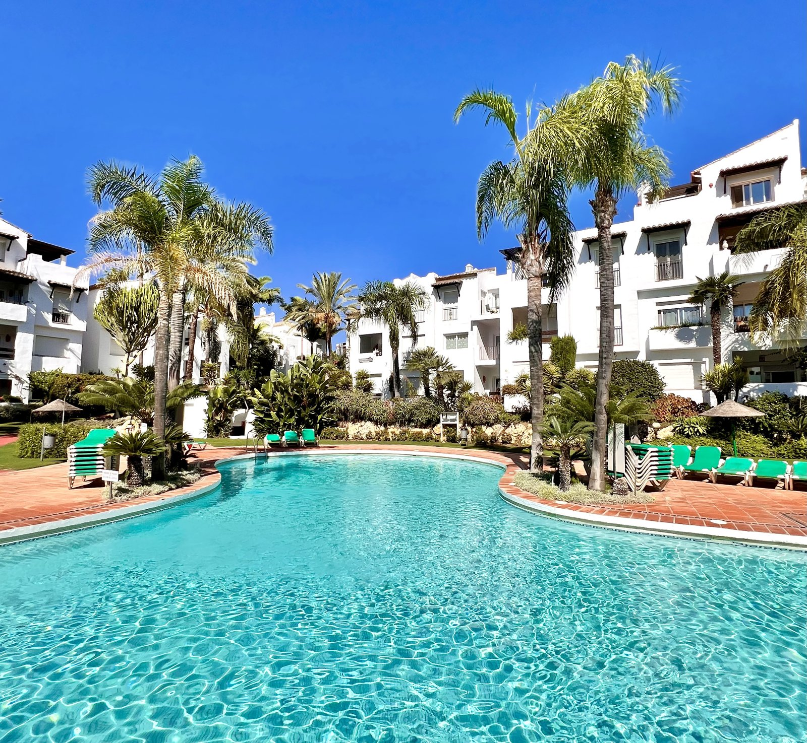

🏡 Self Check-in Guide

🔑 Access
📶 Wi-Fi
Network: Costalita_1F
Password: estepona
❄️ Air Conditioning & Heating
🛏️ Towels & Linens
🏖️ Beach Access
🛒 Supermarkets
📍 Local Guide
✈️ Getting Here from the Airport
🔥 Stove / Hob
📞 Contact
😊 Enjoy your stay!